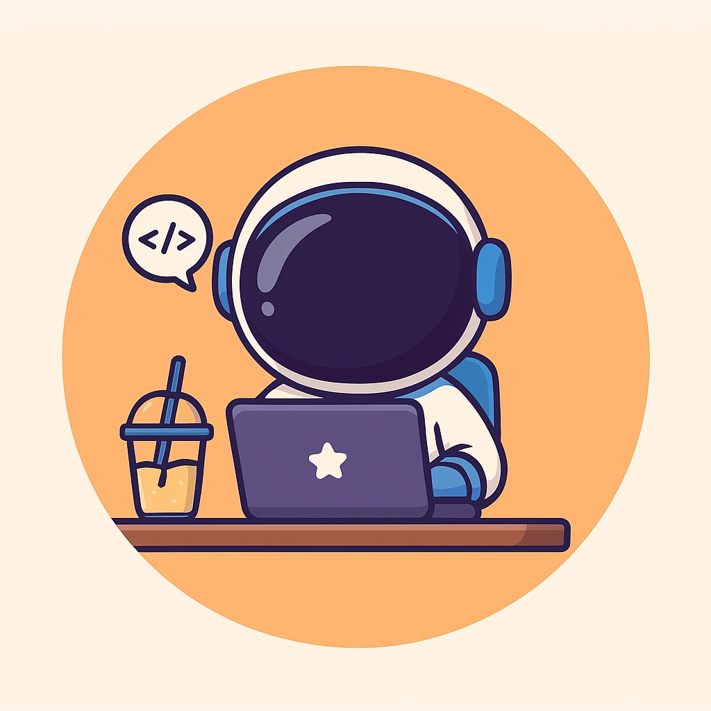

01
Chandigarh Engineering College, CGC Landran
Bachelor of Technology in Information Technology
Aug 2023 — June 2027
Mohali, India
CGPA 8.96
Undergraduate
Aspiring software developer passionate about exploring new technologies and building impactful projects. Eager to contribute to dynamic teams by solving real-world problems through innovative software solutions.

B.Tech IT · Class of 2027
Mohali, India
CGPA
8.96
2021 — 2027
Bachelor of Technology in Information Technology
Aug 2023 — June 2027
Mohali, India
CGPA 8.96
Undergraduate
Class 12 (CBSE)
Mar 2021 — Mar 2022
Sikar, Rajasthan
89.2%
Percentage
Class 10 (CBSE)
2019 — 2020
Sangaria, Rajasthan
82%
Percentage
10 projects · latest first
Local-LLM assistant with Python tool calling
My latest build — a basic AI assistant running a locally-hosted language model, with Python tool calling through a function-name-to-function mapping, an execution loop that feeds tool results back to the model, and error handling for reliable runs.
College health-centre portal · full stack
Full-stack portal for the college dispensary — patients track visit history, doctors record consultations, staff manage medicine stock, admins manage accounts. React 19 + Express 5, JWT in HTTP-only cookies, PostgreSQL.
Flight-management backend service
A Node.js flight & city API service with layered architecture — repositories, services, middlewares, migrations and seeders on a Sequelize ORM setup.
TDD-built inventory & commerce platform
Full-stack dealership system built with Test-Driven Development — RESTful CRUD APIs on PostgreSQL, JWT auth with role-based authorization, a Jest-tested backend, and a React SPA to browse, search and purchase vehicles.
CPU scheduling simulator in C++
A C++ simulator built on OOP and the STL — FCFS, SJF, Round-Robin and Priority scheduling with waiting, turnaround and response-time metrics, plus context switching, preemption and configurable time slices.
Full-stack e-commerce store
Minimal full-stack e-commerce app — product, cart and order APIs with a React (Vite) frontend served from Node.js, Express and MySQL.
Kitchen inventory, in the browser
A browser-based kitchen inventory tool with localStorage persistence, automated expiry alerts, and a downloadable shopping list. Light/dark mode, real-time filtering, no login required.
One-minute wellness breaks
A lightweight wellness web app for 1-minute stress relief — guided breathing, yoga and mindfulness exercises with CSS-animated timers. Fully responsive, no backend.
Budgets with real-time insight
A student-focused finance tracker with real-time dashboards and budget insights built on Chart.js — transaction management, category filters and offline localStorage persistence.
things I work with
Languages & Core
CS Foundations
Backend & Data
AI Engineering
Tools & Practices
sprinter & builder
Hey, I’m Anoorag! A 2nd-year B.Tech student with a passion for both sprinting and coding. Whether I’m running on the track or building interactive landing pages, I approach both with the same energy and precision — from winning school athletics medals to designing smooth, responsive websites.
My coding journey began with C++ and DSA, and I quickly fell for the world of web design. With tools like HTML, Tailwind CSS and Bootstrap, I love bringing fresh ideas to life with seamless interfaces. Just as I chase my personal best on the track, I chase perfection in every project I work on.
“The best way to predict the future is to create it.”

Beyond code
Track, badminton & late-night builds
5 posts · from the archive
anoorag.techblog
More writing on GitHubalways up for a chat
I’m always up for chatting about new projects, opportunities, or just connecting with like-minded people. Feel free to reach out!